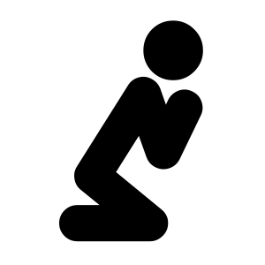
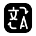
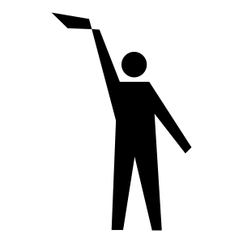
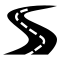

Rozdział 2 Do różańca

To są pisoenki do różańca
2.1 Papa, Stef Bos

Papa (Bos 1991) Tato to wyznanie skierowane do ojca Bosa u którego zdiagnozowano raka. Leczenie “Taty” się powiodło, zmarł przeżywszy jeszcze 23 lata.
Ik heb dezelfde ogen
En ik krijg jouw trekken om mijn mond
Vroeger was ik driftig
Vroeger was jij driftig
Maar we hebben
Onze rust gevonden
En we zitten naast elkaar
En we zeggen niet zoveel
Voor alles wat jij doet
Heb ik hetzelfde ritueel
Papa, ik lijk steeds meer op jou
Mam oczy takie same
A na mojej twarzy rzeźbią się rysy twoje
Kiedyś porywczy byłem ja
Kiedyś porywczy byłeś ty
Ale znaleźliśmy
Spokój w sobie
I siedzimy obok siebie
I mówimy niewiele
Do wszystkiego, co robisz
Rytuał mam ten sam
Tato, coraz bardziej przypominam ciebie
Ik heb dezelfde handen
En ik krijg jouw rimpels in mijn huid
Jij hebt jouw ideeën
Ik heb mijn ideeën
En we zwerven in gedachten
Maar we komen altijd thuis
De waarheid die je zocht
En die je nooit hebt gevonden
Ik zoek haar ook
En tevergeefs zolang ik leef
Want papa, ik lijk steeds meer op jou
Mam ręce takie same
A na mojej skórze robią się zmarszczki twoje
Ty pomysły masz swoje
Ja pomysły mam swoje
I wędrujemy w myślach
Ale zawsze wracamy z powrotem
Ta prawda, której szukałeś
I której nigdy nie znalazłeś
Też szukam jej ja
I na próżno, dopóki żyję
Bo tato, coraz bardziej przypominam ciebie
Vroeger kon je streng zijn
En ik heb je soms gehaat
Maar jouw woorden
Ze liggen op mijn lippen
En ik praat nu
Zoals jij vroeger praatte
Ik heb een goddeloos geloof
En ik hou van elke vrouw
En misschien ben ik geworden
Wat jij helemaal niet wou
Maar papa, ik lijk steeds meer op jou
Kiedyś surowy mogłeś być
I czasami nienawidziłem ciebie
Ale słowa twoje
One są na ustach moich
A rozmawiam teraz ja
Jak rozmawiałeś kiedyś ty
Wyznaję bezbożną wiarę
I kocham wszystkie kobiety
I stałem się może czymś
Czego wcale nie chciałeś ty
Bo tato, coraz bardziej przypominam ciebie
Jij gelooft in God
Dus jij gaat naar de hemel
En ik geloof in niks
Dus we komen elkaar na de dood
Na de dood nooit meer tegen
Maar papa, ik hou steeds meer van jou
Ty wierzysz w Boga
Więc pójdziesz do nieba
A ja nie wierzę w nic
Więc nigdy więcej po śmierci
Po śmierci się nie spotkamy
Bo tato, coraz bardziej przypominam ciebie

- Ik zie een kleine glimlach om haar mond trekken.NA
- Ik krijg slaap. Chce mi się spać.
- Ik krijg NA
- Niet alles is voor geld te koop. Nie wszystko można kupić za pieniądze.
- Ik lijk op mijn moeder. Wyglądam jak moja matka.
- Inmiddels ervaren steeds meer mensen de nadelen. Tymczasem coraz więcej osób doznaje szkód.
- Ik kom thuis tegen zes uur. Będę w domu przed szóstą.
- Hij zwerft al maanden door Europa. Od miesięcy wędruje po Europie.
- Zij liggen te praten. Oni rozmawiają leżąc.
- Dat ligt mij niet. To mi nie leży.
- Eén die weldra op aller lippen zal liggen. Ten, który wkrótce będzie na ustach wszystkich.
2.2 Afscheid nemen bestaat niet, Marco Borsato

Afscheid nemen bestaat niet (Ewbank and Kooreneef 2003) Żegnamy się, nie istnieje to najpopularniejsza niderlandzkojęzyczna piosenka na pogrzebach.
Afscheid nemen bestaat niet
Ik ga wel weg maar verlaat je niet
Mijn lief, je moet me geloven
Al doet het pijn
Żegnamy się, nie istnieje
Tak, odchodzę, ale cię nie opuszczam
Kochanie moje, musisz mi uwierzyć
Chociaż to boli
Ik wil dat je me los laat
En dat je morgen weer verder gaat
Maar als je eenzaam of bang bent
Zal ik er zijn
Chcę, byś pozwoliła mi odejść
I byś jutro dalej poszła sama
Ale, gdy będziesz samotna lub przestraszona
Ja tam będę
’k Kom als de wind die je voelt en de regen
Volg wat je doet als het licht van de maan
Zoek me in alles dan kom je me tegen
Fluister mijn naam en ik kom eraan
Przychodzę jak wiatr, który czujesz i deszcz
Podążaj za tym, co robisz jak światło księżyca
Poszukuj mnie we wszystkim, wtedy mnie spotkasz
Wyszepcz moje imię, a zaraz tam będę
Zie wat onzichtbaar is, wat je gelooft is waar
Open je ogen maar en dan zal ik bij je zijn
Alles wat jij moet doen is mij op m’n woord geloven
Afscheid nemen bestaat niet
Zobacz co niewidzialne, co uważasz za prawdę
Otwórz tylko oczy, a ja będę przy tobie
Wszystko, co musisz zrobić to uwierzyć mi na słowo
Żegnamy się, nie istnieje
Kijk in de lucht, kijk naar de zee
Waar je ook zult lopen, ja, ik loop met je mee
Iedere stap en ieder moment
waar je dan ook bent
Spójrz w niebo, spójrz na morze
Gdziekolwiek pójdziesz, tak, ja pójdę z tobą
Z każdym krokiem i w każdej chwili
Gdziekolwiek wtedy będziesz
Wat je ook doet, waar je ook gaat
Wanneer je me nodig hebt
Fluister gewoon mijn naam en ik kom eraan
Afscheid nemen bestaat niet
Cokolwiek będziesz robić, gdziekolwiek pójdziesz
Gdy mnie potrzebujesz
Po prostu wyszepcz me imię, a zaraz tam będę
Żegnamy się, nie istnieje
- En daarom moet ik nu afscheid nemen. I dlatego muszę się teraz pożegnać.
- Er bestaat niet één veilige plek meer in Japan. W Japonii nie ma już bezpiecznego miejsca.
- Zulke aardige mensen als jou kom je maar zelden tegen. Rzadko spotykasz tak miłych ludzi jak ty.
- Ik kan er naartoe, waar je ook wil. Mogę iść gdziekolwiek chcesz.
2.3 De weg, Guus Meeuwis

De weg (Grönemeyer 2002) Droga to luźny cover piosenki ‘Der weg’ niemieckiego piosenkarza Herberta Grönemeyera.
’k Kan nauwelijks wat zien door de waas voor m’n ogen
Leek alles gelogen, al het mooie lijkt dood
’k Heb zelfs de kracht niet om op te geven
Al wil ik het niet het leven gaat door
Ledwo widzę cokolwiek przez mgłę przed oczami
Wszystko wydawało się przekłamane, wszystko piękne wydaje się martwe
Nie mam nawet siły się poddać
Już nie chcę, by życie toczyło się dalej
We leefden ons leven om samen te sterven
De bergen beklommen en de dalen gedicht
In het diepst van de nacht zelfs de zon laten schijnen
Niets wat niet kon en niets was teveel
Żyliśmy po to, by umrzeć razem
By góry pokonać i dolin wiersz
By w głębinach nocy nawet słońcu dać świecić
Nic nie było niemożliwe i niczego nie było zbyt wiele
We wilden geloven in het eeuwige leven
Ons samen verscholen, een wanhopig getroost
We hebben de waarheid zo diep als kon begraven
’k Was één met een engel zo lang het mocht
Chcieliśmy wierzyć w życie wieczne
Nas razem pochować, desperacka pociecha
Pogrzebaliśmy prawdę tak głęboko, jak tylko się dało
Byłem sam z aniołem tak długo, jak to było możliwe
Waar jij verscheen scheen de zon met je mee
Geen tijd voor verdriet maar elke dag omarmd
En altijd vrolijk hoe jij dat voor elkaar kreeg
Met oneindig veel moed het leven is niet fair
Tam, gdzie się pojawiałaś, świeciło słońce wraz z tobą
Nie ma czasu na smutek, jednak obejmuje każdego dnia
I zawsze szczęśliwa, jak ci się to udawało
Z nieskończenie wielkim zapałem, życie jest nie fair
De dans gedanst op een zilveren tapijt
Met jou dicht bij mij, de verloren tijd beweend
Doelloos verzonken en dronken en niets dat niet mocht
Wij twee door de tijd, de tijd heen midzomernachtdroom
Taniec przetańczony na srebrnym dywanie
Z tobą blisko mnie, utracony czas przepłakany
Utopiony bez sensu, przepity i nic co niedozwolone
My dwoje przez czas, czas hen daleko, sen nocy letniej
Jouw stralende lach en je mooie gedichten
Jouw tedere woorden, je onverwoestbaar krachtige wil
Je hebt je noodlot steeds het hoofd geboden
Tot het eind geloofde je jouw idee van geluk
Twój promienny uśmiech i twoje piękne wiersze
Twe czułe słowa, ?ty chcesz niezniszczalne potężne
Zawsze stawiałeś czoła losowi
Do końca wierzyłeś w swój sposób na szczęście
’k Ga niet weg, ik heb nog wat tijd gekregen
’k Zal altijd maar door gaan tot aan het eind
’k Heb je voor altijd m’n hart gegeven
’k Draag je bij me tot het licht straks dooft
Ja nie odchodzę, mam jeszcze trochę czasu
Zawsze będę trwał aż do końca
Oddałem ci moje serce na zawsze
Niosę twoje przy sobie, dopóki nie zgaśnie światło
- Wat mijn collega zegt, is simpelweg gelogen. To, co mówi mój kolega jest po prostu kłamstwem.
- Sommige oppositieleiders riskeren zelfs de doodstraf. Niektórzy przywódcy opozycji ryzykują nawet karą śmierci.
- Tomek is degene die alles voor elkaar kreeg. Tomek jest taki, że wszystko załatwi.
- Hou moed! Odwagi!
- Adam had vast niet gewild dat je hem beweent. Adam na pewno nie chciałby żebyś za nim płakała.
- Ik loop doelloos door de stad. Idę bez celu przez miasto.
- Je bent dronken. Jesteś pijany.
- Een groot deel van het skelet is in de modder verzonken. Duża część szkieletu jest zatopiona w błocie.
References
Bos, Stef. 1991. Papa. https://youtu.be/ptGJ8wzeGDE.
Ewbank, John, and Han Kooreneef. 2003. Afscheid Nemen Bestaat Niet. https://youtu.be/lSo6LyEA1ks.
Grönemeyer, Herbert. 2002. De Weg. https://youtu.be/vuGcIfMq65A.